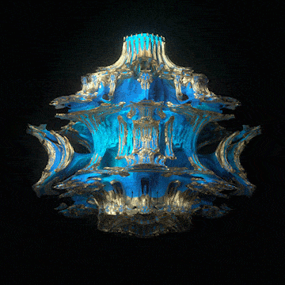

UBER BULB
从你的公式，重新生长。

原始 GIF · 360 × 360 · 4.8 秒拖动旋转 · 滚轮缩放GIF 参数预设 · 蓝金材质拟合
向右滑动，切掉镜头前方遮挡；修剪方向随视角变化。
复现依据与当前进度
形态直接来自你提供的 Octane OSL：UBER BULB V3.0，原公式 © 2020 Machina-Infinitum。本版本保留核心迭代、Bailout 判定、历史向量、球面变换、Julia 与实验模式，并为零除、反三角函数越界和浮点溢出加入保护。
已录入完整形态参数。参考 GIF 原周期为 4.8 秒；网页默认以 20 秒播放双相位关键帧，LoopPI：1.695 → 0.129，LoopPI2：3.14 → 0，插值先采用线性。双相位区间与线性插值固定，不提供修改入口。蓝金材质使用轨道数据映射，灯光为可调工作室拟合，包括金属反射、高光、环境反射、阴影与青色发光。
精细与超精细模式增加一次受限反射追踪；超精细以两倍边长渲染，保存图片保留该分辨率。黑色环境、可调灯箱与独立暗部补光用于高光比拟合。目前属于有限光线步进近似，未实现 Octane 的路径追踪、多次折射和全局光照。复杂实验模式的距离估计并非精确距离，可降低步进系数改善缺面，或加大搜索范围寻找离开画面的结构。